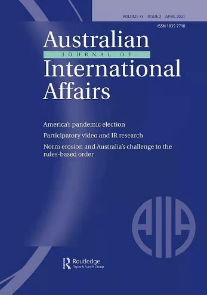
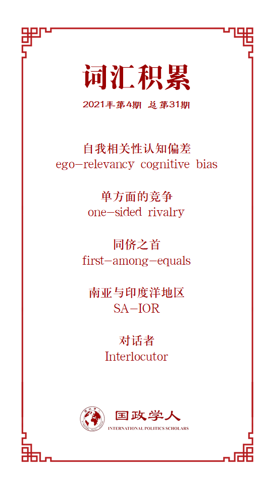

收录于合集

作品简介
【作者】 Manjeet S. Pardesi，惠灵顿维多利亚大学政治科学与国际关系高级讲师。研究兴趣包括国际关系史、大国政治、亚洲安全、印度外交/安全政策。
【编译】 胡可怡（国政学人编译员，四川大学国际关系学院）
【校对】 房宇馨
【审核】 李源、杨紫茵
【排版】 林祉欣
【美编】 游钜家
【来源】 Pardesi, M. (2021). Explaining the asymmetry in the Sino-Indian Strategic Rivalry, Australian Journal of International Affairs ,
DOI: 10.1080/10357718.2021.1893267
【归档】 《国际关系前沿》2021年第4期，总第31期。
期刊简介

Australian Journal of International Affairs（AJIA，澳大利亚国际事务杂志），成立于1946年，由澳大利亚国际事务研究所负责编辑、出版，是澳大利亚知名国际问题研究杂志，发表关于国际政治、社会、经济和法律问题的学术研究成果，特别关注亚太地区事务。
解读中印战略竞争中的非对称性
Explaining the asymmetry in the Sino-Indian Strategic Rivalry
Manjeet S. Pardesi
内容简介
目前有关中印竞争非对称性的研究多强调物质力量、威胁感知、国家地位等要素的影响。作者从观念层次切入，提出 中印竞争的非对称性的根源还在于中国对印战略认知中根深蒂固的“自我相关性认知偏差” （ego-relevancy cognitive bias）。这种认知导致中国总是从俯视的角度评估印度的国家地位，将其置于与中国“不对等”的位置，并视印度为相对次要的（lesser）战略竞争对手。
尽管中国的对印认知中存在明显的“非对称性”，但实际上中国对印度并非毫无忧虑。在此判断的基础上，作者总结了中印竞争的战略内涵：第一，目前两国间的地位之争与领土争端错综复杂、相互交织；第二，中印竞争并非简单的二元主体对立；第三，中印竞争中潜在的军事竞争色彩对该地区的其他国家具有溢出效应。中印竞争的烈度目前没有减弱的迹象，未来将持续走高。
文章导读
崛起的中国与崛起的印度有何关联？现有的学术研究成果为解读中印竞争提供了不同的视角。谢淑丽（Susan Shirk）认为，即使印度将中国视作对手，但中国并未将印度当作竞争对象，因此中印竞争本质上是“单方面的竞争”（one-sided rivalry）；而在加维尔（John W Garver）看来，由于两国之间物质力量的差距，中国有意地将印度定位为次要的竞争对手，中印竞争并非“单方面的竞争”，而是“非对称的竞争”。
加维尔认为中印竞争具有“非对称性”的观点是可取的，在研究“非对称性”的众多学术成果中，以下三个要素的影响总是被频繁地强调：物质力量、威胁感知、国家地位。然而，除了这些要素之外，本文认为“非对称性”还来源于中国对印度历史与国家地位的认知方式，以及由此产生的“自我相关性认知偏差”。
一方面，中国对印度的修正主义行径及其在南亚的霸权野心感到担忧，认为印度具有阻碍中国实现其宏观战略目标的能力；另一方面，尽管中国对印度抱有诸多担忧，在“自我相关性认知偏差”的影响下，中国始终认为印度是与中国“不对等”的国家，实力与地位均与中国不在同一量级，是相对次要的战略竞争对手。
为了对上述观点进行论证并且进一步解读中印竞争的内涵，本文主要从以下四个部分展开阐释：第一部分，简要介绍中国的宏观战略目标；第二部分，分析中国精英眼中印度的形象特征；第三部分，解读中印竞争的内涵及特点；最后，对中印关系的未来进行预测。
01
中国的宏观战略目标
中国的宏观战略一直缺少完整的官方阐释。尽管如此，通过对两个主体要素的分析，能够勾勒出该战略的基本轮廓：其一，从中国官方讲话中推断其战略目标；其二，在制定外交政策的过程中，以学者和公共知识分子为代表的“新主体”（new actors）的影响逐渐显现。
由于“战略竞争对手”的定位实际上来源于该国精英阶层的认知，因此本文认为仅对上述两个精英群体的主要观点进行研究，对于实现本文的研究目标已然足够。另外，出于进行学术分析的目的，精英阶层可被视为“内部统一”（unitary）的整体，通过分析精英们处理信息的心理过程，可以窥见其对具体对象的认知与看法。
首先，中国提出要 “日益走近世界舞台的中央，不断为人类作出更大的贡献”，“到2050年，中国将成为综合国力和国际影响力领先的国家”，实现“中华民族伟大复兴的中国梦” 。换句话说， 中国在全球层面的战略目标是在一个多极化的世界中取得全球领先地位，成为“同侪之首” （first-among- equals），而不是在单极化的世界里执着追逐至高无上的全球霸权，成为世界上唯一的超级大国。中国恪守“主权国家平等”的原则，所以会更倾向于一种“更为柔和”的“等级制”，其追求全球领先地位的战略目标也反映了这种相对柔和的等级观。
相对于全球战略，中国有关亚洲区域秩序构想的官方立场并不明晰。不过，通过分析中国顶尖学者的研究，可以在一定程度上把握中国在构建亚洲区域秩序方面的战略偏好。有中国学者指出，就物质力量与大国政治而言，东亚地区已经成为了“世界中心”。除非成为东亚地区的主导力量，否则中国无法实现民族复兴的目标；也有学者提出不同看法，认为世界政治经济中心向整个亚洲大陆和印度洋同太平洋的交汇处转移，而不是仅仅向东亚转移，因此中国不能仅仅局限于东亚地区，还需要依托整个亚洲作为地缘战略之基础。
中国学者们几乎都相信，为了实现“民族复兴”，中国必须崛起为全球大国。虽然对于东亚以及整个亚洲战略价值的看法不尽相同，但基本上都认为 建立区域主导权是中国的地区战略目标 。从这一逻辑来看，印度也将引起中国的担忧，原因在于：（1）印度可能寻求在南亚地区建立霸权；（2）印度可能对东亚地区施加战略影响。
相邻地区的霸权具有削弱本地区霸权的潜力，因此印度和中国都希望阻止对方在各自所在区域取得主导地位。由于印度对东亚地区抱有战略野心，中印之间的战略竞争变得更加复杂。 换言之，不管中国的战略落脚点是东亚，还是整个亚洲（或者二者兼有），中印之间的结构性战略竞争都难以避免。
02
中国世界观中的印度
中国对印度的战略认知具有三个主要特征：非对称性、印度的“帝国主义”行径，以及印度在南亚地区的霸权主义野心。
（1）非对称性
中国对印度的大国梦想始终持一种轻视态度，所以一些政治精英对印度成长为大国的潜力不以为意。即使接受了印度发展中国家的身份，中国对印度的大国地位仍持保留意见。
为什么中国如此看轻印度？许多学者强调了以下三个因素的影响：两国物质能力的不对称、威胁感知的不对称以及国家地位的不对称。学者普遍认为，中国更关注可对本国产生更大威胁的日本与美国（尤其是后者），而非印度。中国是印度最强劲的竞争对手，但反之却不成立。而从国家地位的非对称性来看，印度要想加入中国所在的“大国俱乐部”，就必须获得中国的承认，然而中国对印度没有类似的诉求。
上述分析有可取之处，但是不够完整和深入。 事实上，中国对印度的轻视态度在两国物质实力出现明显差距之前就已经产生 。早在20世纪40年代，中国就曾将印度形容为英美的“侍从”（lackey）以及帝国主义的走狗。这种看法并非来源于物质实力的差距（当时中印两国经济体量相似），也未受不同意识形态的影响，而是根植于近代中国与作为英帝国主义代理人的印度相接触的历史记忆、对印度国家地位的看法，以及由此产生的认知偏差。
由于西方国家及其后的日本强行入侵，中国从东亚区域等级秩序的顶端狠狠跌落， 一雪 “百年国耻”成为中国现代化的主要目标。 印度不仅充当了中国现代化探索中“反面教材”角色，而且还曾作为英国帝国主义的代理人参与侵华过程。这两种历史经历是中国将印度视为“次要”力量的根源所在。换言之，中国希望能像西方国家和日本那样富有强大，也有意识地避免重蹈印度的覆辙，因此并不认为印度能够与自己相提并论。
同时，中国对印度国内的分离主义倾向也表示怀疑。印度“前殖民地”的身份使中国将印度视为一个尚未解决国内民族问题的“暴发户国家”（upstart state），由此认为印度的大国追求是鲁莽、自命不凡并且不顾后果的。另外，中国也对印度式民主及其处理国内安全问题的能力评价偏低。总而言之，中国对印度的“非对称”战略认知并不仅仅与不对称的物质力量以及国家地位有关，还与中国的“自我相关性认知偏差”相关。当一个国家拥有多个竞争对手时，国家会给这些对手进行排序。在排序过程中，相对实力的评估与自我相关性都至关重要。
（2）帝国主义的印度
中国特别关注印度在中国西南地区的活动，中印矛盾更在1962年中印战争期间达到顶峰。这给中国带来了三个问题： 印度对中国内政干涉、国际声誉方面的负面影响、中印边界问题的复杂化。 第一，中国西南地区宗教事务对中印关系来说具有地缘政治内涵。第二，国家声誉之于一个国家既可以是目标本身，也可以是国家实现其他目标的手段。在将国家声誉作为目标的视阈下，中国所追求的不仅是成为一个实力强大的国家，还希望作为一个“独特的文明”赢得全世界的尊重。但是，印度通过干涉中国内政，持续不断地向崛起的中国勒索声誉成本。第三，两国之间的西南地区问题与边界争端及其历史渊源之间具有复杂的内在关联。
（3）霸权主义的印度
自20世纪40年代后期以来，中国一直担心印度对喜马拉雅山脉国家（尼泊尔、不丹及1975年被印度吞并的锡金）的霸权主义企图。印度独立初期对500余个土邦的兼并以及1947-1948年间与巴基斯坦在克什米尔地区爆发的冲突均被中方解读为印度迈向南亚霸权的重要步骤，其意图是继承英属印度的殖民遗产。与此类似，1974年印度的核试验被中方视为印度对巴基斯坦、孟加拉国以及阿富汗等邻国的威慑；1975年对锡金的吞并被理解为印度“彻头彻尾的扩张主义行为”；1998年的印度核试验被归因于印度“渴望成为南亚区域霸权”。另外，除担心印度的陆上霸权野心之外，中国领导人也认为印度正在寻求在印度洋建立海上区域霸权。
总而言之，印度在南亚地区（陆上和海上）的霸权野心给中国带来了麻烦，因为中国一直希望通过基础设施建设（特别是“一带一路”倡议）将其国内西部、西南部地区与南亚区域相整合。加维尔认为，中国只有确保在南亚与印度洋地区实现并巩固其战略利益之后，才可能真正实现成为世界性大国的抱负，否则中国就只能成为东亚的区域性大国。此外，令中国担心的是，印度不仅会在中国向南亚地区拓展利益的过程中构成阻碍，其“向东行动”战略甚至可能存在“遏制中国”的企图。
03
中印竞争的四层内涵
上述对中印关系的分析包含 四层重要内涵 ：
第一，中印在亚洲地区的地位之争本质上与两国长期悬而未决的领土边界之争相联系，这又与印度干涉中国内政相关，这一系列事项的内在关联增加了解决问题的难度；
第二，中印竞争是“复合性竞争”，而非简单的二元主体竞争。复合性竞争的动力还受其他两个因素的影响：与竞争方的其他竞争对手的互动，以及与竞争方的其他伙伴的互动。中印竞争与印巴竞争、中美竞争、中日竞争之间的“非线性相互作用”（non- linear interactions）给中印关系增加了新的不确定性。
第三，中印竞争及其暗含的军事竞争色彩会对周边地区（尤其是南亚）其他国家产生溢出效应。
第四，随着近几十年来中印物质力量差距的不断扩大，两国竞争的节奏正在逐渐加快。自1987年以来，中印之间仅发生过三次军事争端，并且都发生在2003年至2009年之间。然而从2013年至今，两国之间就已经发生了五次重大军事冲突，2020年的加勒万河谷冲突中甚至出现了自1975年土伦山口冲突以来从未有过的人员死亡事件。虽然目前两国竞争烈度随着力量差距的扩大反而呈现不降反增趋势背后的原因尚未明晰，但是我们至少需要更加关注认知因素在其中发挥的影响。
04
结论
尽管中印两国间存在着非对称性，有三个影响因素可能加快未来中印竞争的节奏：
第一，如果未来十年印度的经济增长速率能够超过中国，印度将会成为世界上唯一发展比中国快的大国，中印两国的力量对比动态会因此发生一定变化，相对权力可能朝向有利于印度的方向转移；第二，如果印度进一步加强其与美国、日本的战略伙伴关系，上述力量对比状态的转移将更加显著。然而，即使中印之间物质力量差距继续扩大而继续向对中国有利的方向发展，也不能认为两国之间的竞争会因此得到缓和；第三，如果印度能在保持自由民主与多元化传统的同时实现持续性的经济增长，或许能为世界其他国家提供一种新的国家发展模式。这种模式既不同于“先致富，后民主”的西方模式，也不同于结合威权主义与国家资本主义的中国模式，而是一种独特的“印度模式”，或者称之为“孟买共识”。由此，印度能够真正与中美同场竞技（a true peer），并且成为中国未来最重要的竞争对手。不管上述预测是否成立， 中印竞争的烈度变化趋势都将持续走强。
译者评述
本文虽然以“中印竞争的非对称性”为题干，但讨论的范围却并未局限于“非对称性”本身，还全面分析了中国全球及区域层面的宏观战略目标及该视阈下了中国对印度的战略认知特征，并在此基础上对中印竞争的未来趋势进行了预测。
从观念认知的角度解释中印竞争“非对称性”的产生根源是本文最突出的创新点。作者认为，中印竞争的“非对称性”源自中国对印度根深蒂固的“自我相关性认知偏差”。这一认知偏差承袭于近代中国与作为英国殖民地及帝国主义代理人印度的交往历史，与两国物质力量的差距及意识形态的分歧无关。另一方面，中国对印认知不仅包括显著的“非对称性”，也囊括对印度“帝国主义”及“霸权主义”野心的战略判断与担忧。对于中印竞争的未来，作者的态度相对悲观。在其看来，中印竞争是结构性的、不可避免的，并且竞争烈度的未来趋势是持续走强。
总的来看，本文较为全面地总结了中国世界观中的印度形象，其中对中印竞争中历史记忆、观念认知因素的强调有助于开拓思路，从更深层次理清影响中印关系发展的症结所在。为何随着物质力量差距的扩大，中印竞争的烈度不降反增？本文虽未对该问题展开分析，但值得我们进行深入思考。
然而，文中有两个论点需要进一步商榷：第一，将“非对称性”的来源全盘归结于中国对印度的认知偏差。作者虽提到了中印两国对身份界定的存在不同理解，但是却只聚焦于中国世界观中的印度形象以及该形象产生的原因，未对印度视角下的中国进行分析；第二，突出观念性因素的决定性作用，认为“非对称性”的产生原因虽然与物质力量差距有关，但根本因素还是中方在建构印度身份形象时源于历史记忆的认知偏差，强调“意识”的第一性。
近年来，中国学界也开始着眼于对中印关系中认知因素的探讨，也有学者对两国身份认知偏差给予了特别关注。如叶海林教授认为，中印之间的身份认知偏差既体现在中印两国对各自国际地位（主体认知）的理解上，也体现在对对方战略定位（客体认知）的判断上，还体现在对两国互动方式效用的评估标准上。对于中国而言，印度是影响周边环境的一个因素，而视角转移到印度，中国则是印度周边环境决定性的塑造者[1]。综合本文与国内代表性研究成果的观点，或许能使我们对中印非对称的身份认知，以及中印竞争中的非对称性形成更为全面深入的理解。
参考文献
[1]叶海林，《身份认知偏差对中印关系前景的影响》，《印度洋经济体研究》，2020年第3期，第1—12页
词汇整理

文章观点不代表本平台观点，本平台评译分享的文章均出于专业学习之用, 不以任何盈利为目的，内容主要呈现对原文的介绍，原文内容请通过各高校购买的数据库自行下载。
国政学人
支持学术公益与知识传播
微信扫一扫赞赏作者 __赞赏
已喜欢，对作者说句悄悄话
取消 __
发送给作者
发送
最多40字，当前共字
上一页 1/3 下一页
长按二维码向我转账
支持学术公益与知识传播
受苹果公司新规定影响，微信 iOS 版的赞赏功能被关闭，可通过二维码转账支持公众号。